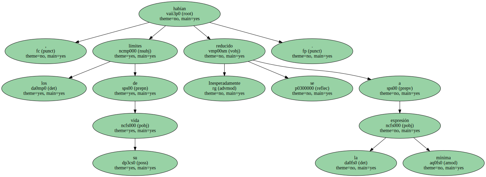
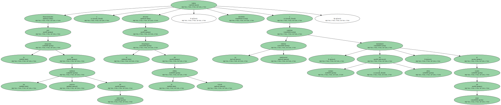
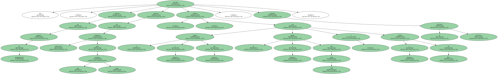
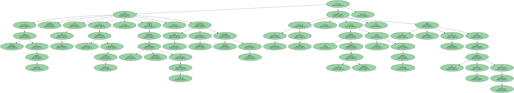
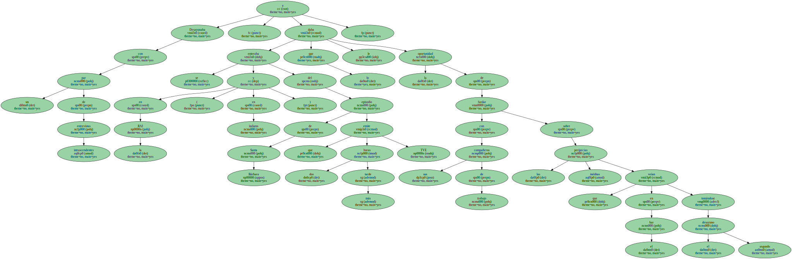

Inesperadamente , los límites de su vida se habían reducido a la mínima expresión.
Entusiasmado por la irrupción de las nuevas cadenas de televisión y absorto ante el despliegue de la oferta visual , había decidido cambiar su hábitat tradicional y trasladarse , en cuerpo y alma , al cuarto de estar.
Allí , rodeado de páginas de programación , provisto de alimentos suficientes para una larga travesía , armado con el mando a distancia del televisor , el mando a distancia del vídeo VHS y mando a distancia del Beta , decidió construir su particular trinchera.
Vivía todo el día de cabeza.

A primera hora de la mañana hacía gimnasia con Lali Ruiz en el monitor de la derecha , mientras descifraba las noticias americanas de la ABC , lo que en ocasiones provocaba algunos momentos de tirantez ; al fin y al cabo , 30 flexiones estirando la pierna izquierda y otras 30 con la derecha no son el mejor caldo de cultivo para recibir los tambores de guerra en el Golfo.
Desayunaba con un par de entrevistas intrascendentes y se enteraba en la RAI ( y en italiano ) del episodio de Santa Bárbara que dos horas más tarde emite TVE , lo que le daba la oportunidad de fardar con sus compañeros de trabajo sobre las peripecias inéditas que veían en el bar tomándose el segundo desayuno.
